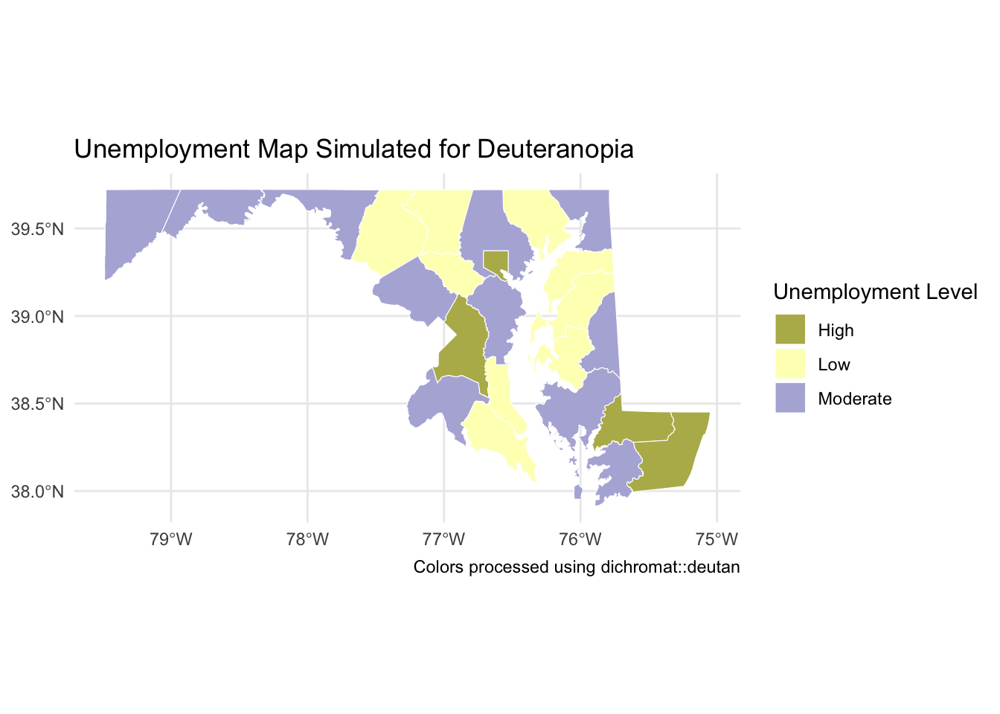
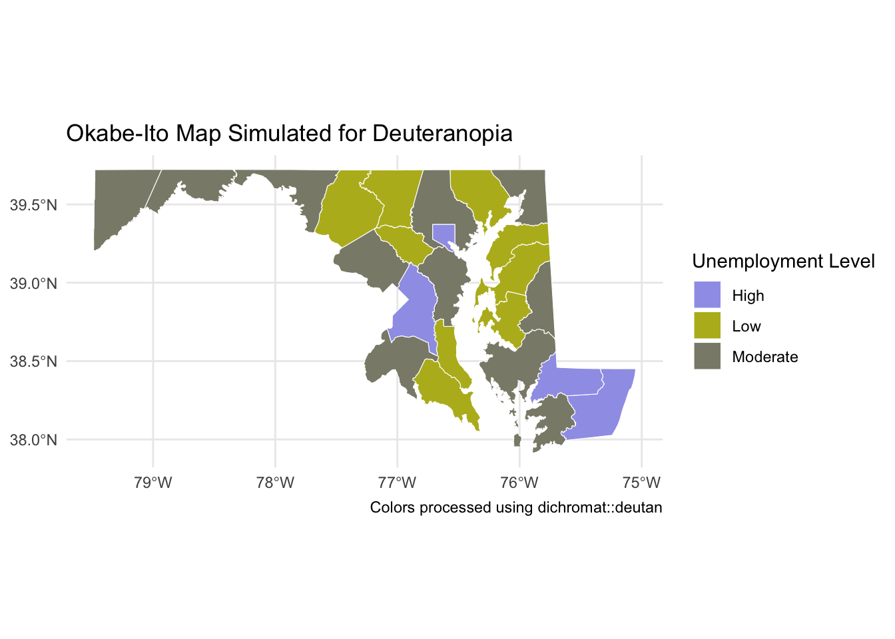

Assignment 4: Making Maps
1. Continous Variable Exploration
I chose to explore CDC data on excessive alcohol use in the United States. This CDC dataset rovides statistics on binge and heavy drinking patterns across the U.S., including prevalence, frequency, and demographic breakdowns in 2022. Specifically, I’m choosing to map and look at the largest number of drinks consumed on an occasion among people who binge drink (for males, binge drinking is defined as having five or more drinks on one occasion; for females, this is defined as having four or more drinks on one occasion.
a. Blank map
b. Creating a cloropleth map

This map visualizes the median number of alcoholic drinks consumed per binge drinking occasion across the contiguous U.S. states. States shaded in darker red tones report higher median values, suggesting more intense drinking patterns in those areas. A clear regional trend may emerge, especially with some states in the Midwest and South showing greater alcohol consumption. The gradient color scheme is effective at showing subtle variations in drink levels while preserving a continuous sense of difference across states. However, it may be slightly harder for viewers to quickly classify states into distinct levels of risk or concern.
c. Classed cloropleth map

This version of the map uses a classed color scheme to break the median number of alcoholic drinks per state into five quantile-based bins, ranging from “Very Low” to “Very High.” Grouping the values like this makes it easier to see general trends and spot outliers quickly. For example, it’s much more obvious which states fall into the top or bottom categories compared to the gradient map, where small differences in color might be harder to interpret at a glance. That said, using bins also comes with trade-offs. You lose some of the nuance in the data — like the difference between a state with a median of 5.5 drinks and one with 5.9, even though they might end up in the same color group. So while this approach works well for highlighting broader patterns, it might not be the best choice if you’re doing more detailed or technical analysis. Overall, I’d say the classed color scheme is helpful when the goal is to communicate results clearly to a wider audience, especially for presentations or public-facing projects. But for exploratory analysis or if you want to keep the full resolution of the data, the gradient map is probably better.
2. Factor Variable Exploration
a. Blank map

b. Sequential color map

The sequential map shows a smooth gradient of unemployment rates across Maryland counties. Darker colors represent higher unemployment. Baltimore City and several Eastern Shore counties stand out with higher rates, while more affluent counties around D.C. appear lighter. The gradient makes it easy to see relative differences, especially small shifts.
c. Divergent color map

The divergent map bins counties into “Low,” “Moderate,” and “High” unemployment groups. This approach simplifies interpretation for non-technical audiences and clearly highlights the counties in economic distress. However, it masks finer differences that the sequential map captured. The best map depends on your goal — detailed comparison (sequential) vs. policy action priority (divergent).
3. Colorblindr package application

The original divergent map used the RdYlBu palette, but the dichromat simulation revealed that it performs poorly for individuals with red-green color blindness. Specifically, the “Low” and “High” categories appear similar in hue and brightness, making it difficult to distinguish between them. The “Moderate” level shows slightly more contrast but still doesn’t stand out clearly. To improve accessibility, I would replace this palette with the Okabe-Ito scale, which provides distinct and colorblind-safe color choices.

After applying the Okabe-Ito palette, the resulting map shows excellent contrast across all unemployment categories. Even under simulation for deuteranopia using the dichromat package, the colors remain distinguishable due to their varied hues and luminance levels. Compared to the original RdYlBu palette, this approach significantly improves accessibility.